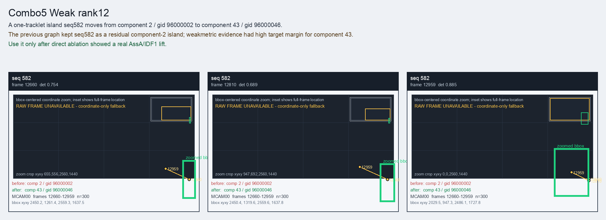

Combo5 Weak rank12
A one-tracklet island seq582 moves from component 2 / gid 96000002 to component 43 / gid 96000046.
Before
component 2, gid 96000002, component_size 233
component 2, gid 96000002, component_size 233
After
component 43, gid 96000046, component_size 94, decision_status post_seq6257_combo_probe
component 43, gid 96000046, component_size 94, decision_status post_seq6257_combo_probe
Evidence
target_sim=0.5063, target_margin=0.2141, source_rest_margin=0.8339
Raw frame
unavailable_coordinate_fallback
target_sim=0.5063, target_margin=0.2141, source_rest_margin=0.8339
Raw frame
unavailable_coordinate_fallback
Failure and fix
Old failure: The previous graph kept seq582 as a residual component-2 island; weakmetric evidence had high target margin for component 43.
New implementation: Use it only after direct ablation showed a real AssA/IDF1 lift.
BBox evidence

Moved tracklets
| seq | video | gid | component | frames | dets |
|---|---|---|---|---|---|
| 582 | vlincs_MS01_MC0001_MCAM00_2024-03-Tc8 | 96000002 -> 96000046 | 2 -> 43 | 12660-12959 | 300 |